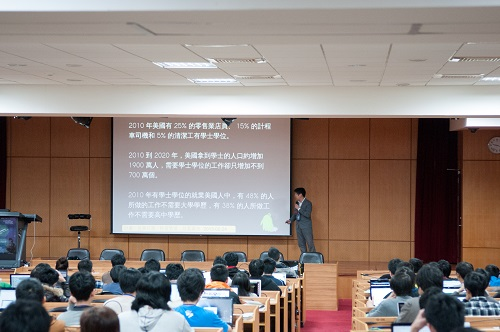
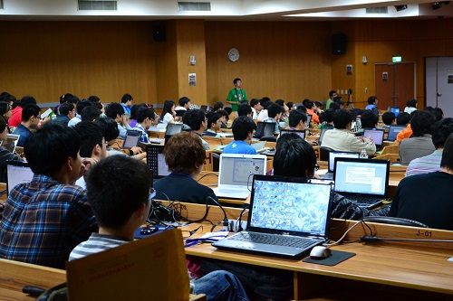
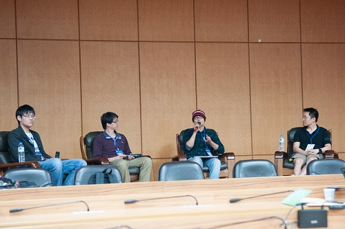
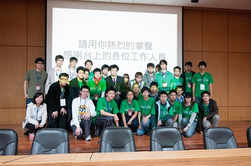

也紀念我們永遠的朋友 李士傑先生（Shih-Chieh Ilya Li）。
2013 台灣資訊領域學生盛會 SITCON：從突破開始
2013 年 3 月 16 日於台灣科技大學的國際大樓會議廳內，一場名為「學生計算機年會 (Students’ Information Technology Conference, SITCON)」的研討會正在進行中；超過 200 位、大多為在學生的參與者，自願利用其週末假期，前往台科大參與首次舉辦的 SITCON 2013，實屬不易、令人印象頗為深刻。
SITCON 是由全國 37 所橫跨高中職與大專院校學生，與中研院資創中心的自由軟體鑄造場 (OSSF) 以及教育部資訊軟體人才培育計畫 (ITSA) 共同主辦的研討會，其中邀請資工領域產業界、學術界的講者以及參與、開創各類資訊專案的學生，一同參與 SITCON，談論身為資訊領域人才，在每個不同的環節，可以有如何的發揮空間。

圖一：jserv 正進行演講中。
SITCON 核心：持續學習 才能持續突破問題
「SITCON 希冀標誌出學生的主動力量的開展點，不再讓知識與技術被拘束於特定的場所與個人薄弱的軀體內。」SITCON 邀請到台灣自由開源軟體界的名人，目前在成功大學資工系擔任兼任講師的黃敬群 (jserv) 進行演講，其中 jserv 談到，台灣學生正面臨「貶值問題」，然而在這之中，學到的東西有變多嗎？面臨整體環境與產業型態，學生們需要的是「突破性的思維」，因此更需要「不斷的學習」。
在學校的時候，所有的學習幾乎仰賴於師長，比起教室裡的學習，從「做中學」所能得到的，總會比想像中的來得更多。曾經參與過世界級的專案，並多次在國內外資訊技術的研討會發表成果的 jserv 特別提到，積極參與自由開源軟體專案的開發會有許多收穫；在參與專案的同時，快速吸收更多知識，看到不同的程式碼，透過自己的消化，進而可以運用於眼前待克服的問題，自然就會因為實作而進步。
出了學校之後，無論選擇走哪條路，持續的學習總是至為關鍵。Jserv 引用了 Linux 核心開發者 Linus Torvalds 的一席話：「現實是複雜的，不存有一劑良藥解萬愁的問題解決模式，現實的問題解決需要大量艱苦工作，以及在細節上做到正確無誤。」因此，唯有終生學習，才能繼續突破，不斷地解決問題。
SITCON 特色：多元 x 舞台 x 講堂

圖二：超過 200 名 SITCON 參與者正專注於講座。
從議程的安排即可看出，SITCON 是以學生為主軸的一場資訊研討會，除了師長及產業先進之外，學生帶著參與的專案進行報告及展示，也佔議程中很重要的一部分。換句說話，SITCON 不只是一間教室讓老師來進行教學，更是一個讓學生能充份展現的舞台。除了邀請業界講師開辦工作坊討論以 JavaScript 實作手機 app、圖像化程式語言 Puredata、跨平台遊戲引擎 Unity 等技術之外，也有設計相關議題、資訊報導中立、資訊傳播等多元的議程，讓業界人士、高中、大學、碩士班學生，都有發表與交流的機會。

圖三：嘉賓座談會中的 Richard Lee（左一）、楊奕軒博士（左二）、Shengpo（右二）以及陳彥仰教授（右一）。
此外，本次 SITCON 還設有一場「嘉賓座談會」，以「你想用 coding 改變怎樣的世界」為題，邀請產業界的 Richard Lee、學術界的台大資工系陳彥仰教授、中研院資創中心楊奕軒博士，與數位藝術領域的 Shengpo 參與座談，談論彼此在各個工作崗位上，如何運用資訊技術，發揮其改變的影響力。裡面最特別的：是數位藝術家 Shengpo，分享念書時專門研究分散式系統；後來卻走向數位創作，探討數位領域的規則與特性，並將資訊技術，轉化成藝術創作等經驗。

圖四：SITCON 2013 團隊成員合影。
SITCON 後記：資工界新燃的火苗
2012 年的台灣，許多技術社群都有舉辦主題研討會，資工領域學生亦積極參與其中。而就在 2012 年夏天舉辦的 COSCUP 開源人年會後，大同大學資研社社長 Takeshi 提出了 SITCON 的初步構想，在網路上獲得廣大迴響後，立即展開討論，在極短的時間內確定組織架構，並準備召開籌備會議，最後由 Denny 擔任總召，帶領各組長與工作人員，並邀請中研院 OSSF 及教育部 ITSA 共襄盛舉，費時五個多月籌備，讓 SITCON 得以順利舉行。
初燃之薪是最困難的，總召 Denny 表示，籌辦 SITCON 最為困難的，在於與來自四面八方的學生成員進行聯繫與協調。然而，這正是一個自由開源專案的特性，不論是透過網路討論或是實體會議，與許多成員一起合作、如何分享傳遞資訊以及凝聚共識，都是自由開源的必經之路。經過第一次籌辦的經驗，除了與會者皆有收穫外，若要再舉辦次屆亦將更有經驗，這股資工界新燃的火苗，必也能照亮更多學生。
※本文圖片，由 SITCON 2013 提供。
Special


Address：No.128, Sec.2, Academia Rd., Institute of Information Science, Academia Sinica, Nangang District, Taipei City 11529, Taiwan (R.O.C).
Privacy Policy. Terms-of-use